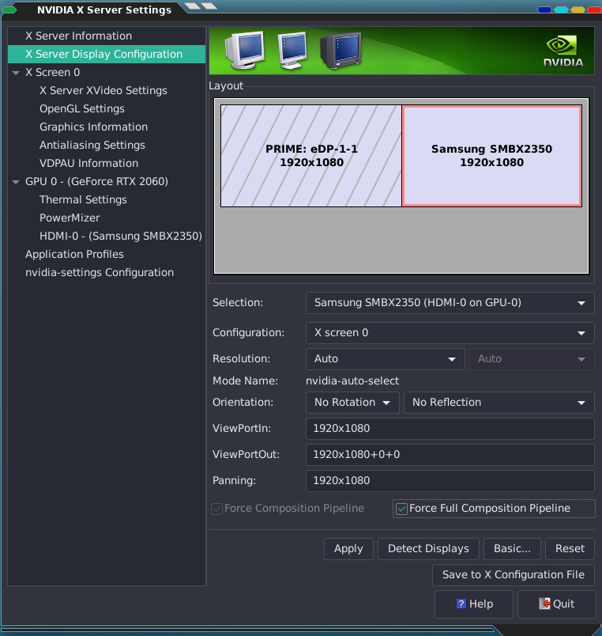

Setup¶
Setup Graphics Card¶
Make sure to setup your graphics card to use the second monitor as a separate display:
Note
Its important to check Force Full Composition Pipeline under Advanced...
to get rid of screen tearing issues.
Power Management¶
Make sure to disable all screensaver, screen power safe and overall powersave options on your system.